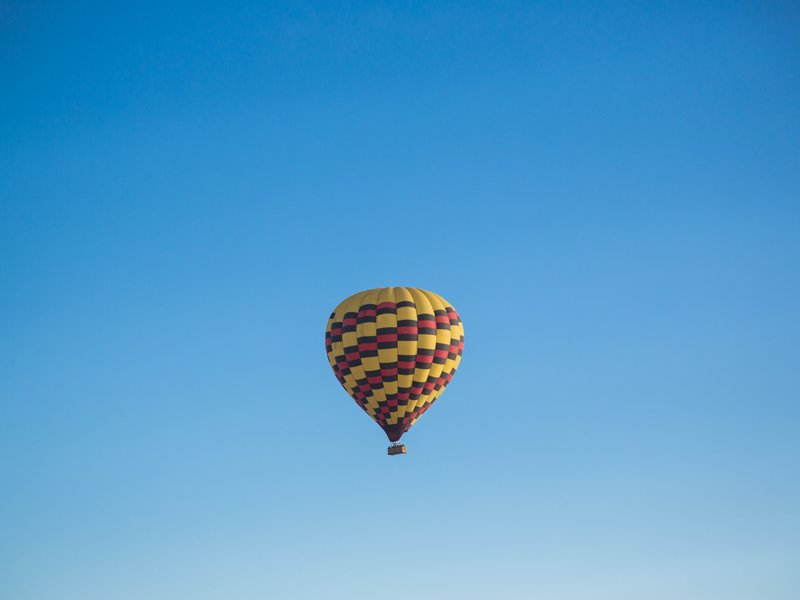
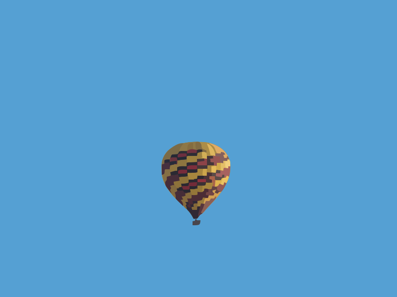
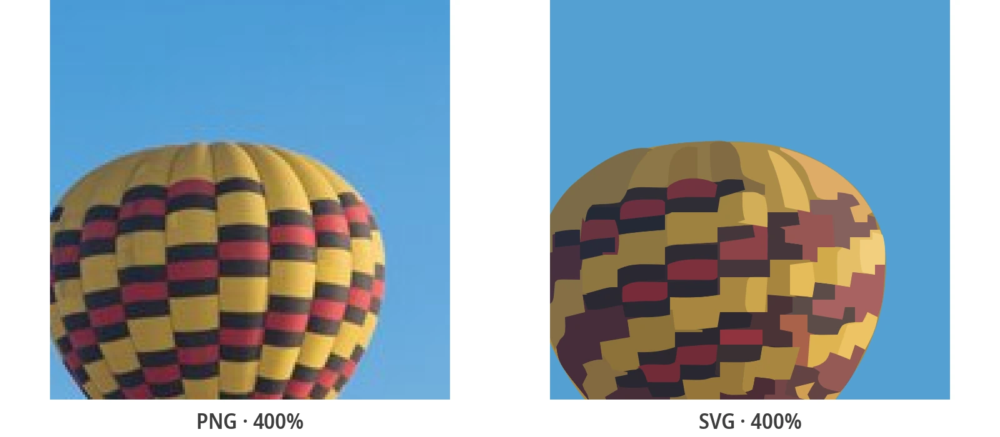

צילום ל-SVG: איך הופכים תמונה לקובץ וקטור
דיוקנאות, צלליות ואיור קו — איזה פריסט לבחור, איך להכין את הצילום, ואילו תמונות עדיף שיישארו רסטר. ממיר חינם, בלי הרשמה.
צילומים הם הקלט הקשה ביותר לווקטוריזציה — וזו הסיבה
המרת צילום ל-SVG אינה החלפת פורמט — היא פרשנות. צילום הוא גוון רציף: אלפי צבעי ביניים, הדרגות רכות, מרקם בכל מקום. המשרטט חייב להחליט אילו מהגוונים האלה יהפכו לצורות אמיתיות, וההחלטה הזאת היא כל המיומנות שבעבודה. אם הצילום שלכם מוכן כבר עכשיו, הממיר החינמי האונליין מ-PNG ל-SVG מבצע את ההמרה בפחות מדקה; שאר המדריך עוסק בלגרום לתוצאה לצאת בדיוק כמו שהתכוונתם.
הערת היקף קודם כול. המרת לוגואים, צילומי מסך וגרפיקה שטוחה היא עבודה אחרת (וקלה יותר), שמכוסה במדריך המרת כל תמונה ל-SVG. המאמר הזה נצמד למה שייחודי לצילומים: צלליות, איור קו, שרטוט בצבע מלא, וההכנה שמכריעה אם התוצאה שמישה.
דעו מה אתם מבקשים: צילום ששורטט אינו צילום. המשרטט בונה מחדש את התמונה כמדרגים של צורות צבע שטוחות — חשבו על אמנות פוסטר, לא על העתקה — והוא לעולם לא ימציא פרטים שהמצלמה לא תפסה. ואם ״ממיר״ כלשהו מוסר לכם svg שעדיין מציג את הצילום המדויק שלכם, פתחו אותו בעורך טקסט: תג <image> אחד ענק ב-base64 במקום אלמנטים מסוג <path> אומר שהקובץ הוא ה-JPG שלכם בתחפושת, לא וקטור.
תוצאות אמיתיות של הממיר



צילום אחד, שלושה יעדים: צללית, איור קו או צבע מלא
לפני שנוגעים בהגדרה כלשהי, מחליטים למה ה-SVG מיועד. צילומים נכשלים בהמרה בעיקר כי האדם נתן לכלי לנחש. יש שלוש תשובות שימושיות, וכל אחת ממופה לפריסט אחד.
צללית — קובץ החיתוך של הדיוקן
השימוש הקלאסי: להפוך דיוקן פרופיל או נושא לצורה אחת מלאה לחיתוך ויניל, חריטת לייזר או סטנסיל. משתמשים בפריסט שחור-לבן בצילום שבו הנושא בולט בבירור על הרקע — פנים בתאורת צד על קיר אחיד הוא המקרה המובהק. כל מה שכהה מסף ההשוואה הופך לצורה; כל מה שבהיר ממנו נעלם.
איור קו — חריטות ודפי צביעה
אם הצילום הוא של ציור — קווי דיו על נייר — רוצים שהקווים יישמרו והנייר ייעלם. פריסט שחור-לבן עושה בדיוק את זה, ואיכות התוצאה תלויה כמעט כולה בניגודיות של המקור: קווים כהים ואחידים על נייר לבן נשרטטים לקווי וקטור נקיים.
צבע מלא — פוסטריזציה, לא פוטוגרפי
פריסט צילום שומר על הדרגות וההצללות כשהוא בונה אותן מחדש כמשטחי צבע מדורגים; פוסטר עושה את אותו הדבר לאמנות שטוחה ומעוצבת עם פלטה מוגבלת. צפו לעיבוד בסגנון פוסטר של הצילום שלכם — כבד יותר משרטוט לוגו, אבל מתרחב לשלט חוצות בלי פיקסל אחד.
איזה פריסט לאיזה צילום
כל ההחלטה בטבלה אחת — מתאימים את הצילום שלכם לשורה ולוקחים את הפריסט מהעמודה האמצעית.
| הצילום שלכם | פריסט | מה תקבלו |
|---|---|---|
| דיוקן או נושא לקובץ חיתוך, סטנסיל או חריטה | שחור-לבן | צורת צללית אחת מלאה, מוכנה למכונה |
| צילום של ציור: דיו, עיפרון, חתימה | שחור-לבן | עבודת קווים נקייה, הנייר מוסר |
| אמנות שטוחה ומעוצבת עם כמה צבעים אחידים | פוסטר | כל אזור צבע כצורה שניתנת לעריכה |
| צילום זיכרון בצבע מלא, מוצר עם הצללות | צילום | משטחי צבע מדורגים, הדרגות מקורבות |
| רקע עמוס, תאורה חלשה, רעש כבד | קודם הכנה | אף פריסט לא יציל את הצילום — ראו מקטע ההכנה להלן |
| צילום שחייב להישאר פוטוריאליסטי | שיישאר רסטר | לשמור את ה-JPG — שרטוט מפוסטר במכוון |
שני פריסטים קיימים מסיבה: הם מקודדים שתי פרשנויות שונות לגמרי של אותם פיקסלים. אם התוצאה הראשונה מאכזבת, מחליפים פרשנות — לא כלי. המכניקה שמאחורי הבחירה מוסברת ב מה וקטוריזציה עושה בפועל.
לפני השרטוט: 60 שניות הכנה שמכריעות את התוצאה
איכות השרטוט נקבעת לפני ההעלאה. המשרטט יכול לעבוד רק עם הצורות שנותנים לו, ולכן מקדישים דקה לתמונת המקור:
- חותכים צמוד. גורמים לנושא למלא את המסגרת. כל פיקסל רקע שמשאירים הוא תקציב שהמשרטט מוציא על משהו שלא רציתם.
- מעלים את הניגודיות. לצלליות ולאיור קו, הפער בין הנושא לרקע הוא הכול. ניגודיות אוטומטית ברוב עורכי התמונות מספיקה.
- מפשטים את הרקע. קיר אחיד, שמיים או יריעה הופכים שרטוט בינוני לשרטוט נקי. רקעים עמוסים והנושא מתמזגים לדייסה.
- משתמשים במקור הגדול ביותר שיש. יותר פיקסלי מקור אומר עקומות משוחזרות חלקות יותר. תמונה ממוזערת של 200 פיקסל לעולם לא תשרטט טוב — זו בעיית רזולוציה שאף פריסט לא יפתור.
מגבלה כנה אחת: הממיר לא מסיר רקעים. אם צריך את הנושא מבודד על רקע שקוף, עושים את החיתוך הזה קודם בעורך תמונות, ואז משרטטים את התוצאה.
איך ממירים צילום ל-SVG בחינם
בלי חשבון, בלי התקנה, בלי סימן מים — ארבעה צעדים:
- מעלים את הצילום — גוררים ומשחררים. JPG, PNG, WebP ו-BMP עובדים כולם; JPG ישר מהמצלמה זה בסדר.
- בוחרים פריסט — שחור-לבן לצלליות ולאיור קו, פוסטר לאמנות בצבעים אחידים, צילום לתמונות מלאות בהדרגות.
- מכווננים עדין — מספר צבעים ופירוט נתיבים מתפשרים בין נאמנות לגודל קובץ, לכל צילום בנפרד.
- מורידים את ה-SVG — אלמנטים אמיתיים של <path>, מוכנים לאינטרנט, לדפוס או למכונת חיתוך.
מתחת למכסה המנוע, ההמרה מריצה מנוע שרטוט אוטומטי הנגזר מ-VTracer, משרטט ה-Rust בקוד פתוח: הצילום שלכם נבנה מחדש כשכבות צורות וקטור, לעולם לא נעטף או משונה בשם.
אילו צילומים משרטטים טוב — ואילו לעולם לא
קובעים ציפיות לפני שמשקיעים שעה בצילום שלא יכול לעבוד. צילומים שמשרטטים טוב חולקים שלושה מאפיינים: נושא מופרד בבירור מהרקע שלו, תאורה שטוחה או כיוונית, וקווי מתאר שהעין יכולה לעקוב אחריהם — מבנים, מוצרים, בלון בשמיים כחולים, פנים בפרופיל על רקע קיר.
- משרטט טוב: ניגודיות גבוהה בין נושא לרקע, קווי מתאר מובחנים, תאורה שטוחה, אמנות שכבר מעוצבת, גרפיקה נועזת על רקעים אחידים.
- לעולם לא משרטט טוב: נושאים שנמסים לתוך רקעים עמוסים, מרקם עדין בכל מקום (שיער, פרווה, עלווה), רעש בתאורה חלשה, תמונות ממוזערות זעירות.
- עדיף שיישאר רסטר: כל מה שערכו דווקא בזה שהוא צילום. תמונת חתונה שחייבת להיראות כמו תמונת חתונה היא עבודה ל-JPG — הפשרות מפורטות ב SVG מול PNG.
עוד פיקסלים לא יצילו צילום שאין בו צורות נקיות. לשחזר פרטים שמעולם לא נתפסו זו עבודתו של מגדיל תמונות — קטגוריית כלים אחרת, שזה במכוון לא מה שהכלי הזה עושה.
הצילום יצא גרוע? תיקון תוצאות גושיות, בוציות או מנומרות
כל שרטוט צילום כושל הוא אחד משלושה תסמינים, ולכל אחד יש תיקון ידוע:
- גווני ביניים בוציים — יותר מדי צבעים דומים שנלחמים זה בזה. מורידים את מספר הצבעים כדי שהמשרטט יתחייב לפחות משטחים, נקיים יותר.
- צורות גושיות — המשרטט פישט יותר מדי. מעלים את רמת הפירוט, או נותנים לו חיתוך מקור גדול יותר של אזור הבעיה בלבד.
- נקודות וקונפטי — רעש ומרקם רקע שנשרטטים כצורות זעירות. מנקים קודם את הרקע בתמונת המקור; זה זול יותר מכל מאבק בהגדרות.
התבנית שמאחורי כל השלושה: הפריסט מפרש, המקור מכריע. כששרטוט מתנגד לכל הגדרה, הצילום אומר לכם מה מהשניים לשנות.
איפה SVG של צילום באמת משתלם
ארבעה יעדים מחזירים את ההשקעה ברגע שהקובץ מגיע:
- מכונות חיתוך — צללית ששורטטה היא בדיוק מה ש-Cricut ו-Silhouette צורכות; המדריך קובצי SVG ל-Cricut ולחיתוך לייזר ממשיך משם.
- חריטת לייזר — מחרטות עוקבות אחרי נתיבי וקטור, לא פיקסלים; שרטוט שחור-לבן נקי של הנושא הוא בדיוק הקלט שהן מבקשות.
- דפוס בפורמט גדול — פוסטר, באנר או מיתוג רכב מתרחבים מקובץ ששורטט אחד, בלי שום פיקסול.
- אמנות אינטרנט בסגנון פוסטר — המראה הפוסטריסטית היא בחירת עיצוב לגיטימית, וכ-SVG הוא שוקל פחות מהצילום שהחליף בגודל של שלט חוצות.
מטפלים בסט שלם — דיוקנאות חתונה, מודעות ב-Etsy, קטלוג מוצרים? זו עבודת אצווה: מדריך ההמרה באצווה עוסק בהרצת עשרות צילומים דרך פרופיל הגדרות עקבי אחד.
מדריכי המרה נוספים
המרה גנרית, מכונות חיתוך ותורת הווקטור — הצלילות העמוקות.
שאלות נפוצות
איך ממירים צילום ל-SVG בחינם?
מעלים את הצילום לממיר האונליין החינמי, בוחרים פריסט (שחור-לבן לצלליות ולאיור קו, צילום לצבע מלא), ומורידים את ה-SVG — בלי חשבון, בלי סימן מים. אם עובדים באופליין, אפליקציית הדסקטופ החינמית מבצעת את אותה ההמרה מקומית.
איזה סוג צילום מומר הכי טוב ל-SVG?
צילומים עם נושא מופרד בבירור, ניגודיות חזקה מול רקע אחיד, וקווי מתאר מובחנים — דיוקנאות בפרופיל, מוצרים, מבנים, ציורים. רקעים עמוסים, מרקם עדין בכל מקום וצילומי חשיפה חלשה משרטטים גרוע לא משנה מה ההגדרות.
אפשר לחתוך SVG של צילום ב-Cricut או לחרוט אותו בלייזר?
כן — זו הסיבה הנפוצה ביותר להמיר. משרטטים את הצילום עם פריסט שחור-לבן כדי לקבל צללית מלאה, והנתיבים שמתקבלים הם בדיוק מה שמכונות חיתוך ומחרטות לייזר עוקבות אחריו.
למה הצילום שלי נראה מצויר אחרי ההמרה?
כי השרטוט בונה את הצילום מחדש כמדרגים של צורות צבע שטוחות — פרשנות בסגנון פוסטר, לא העתקה. העלאת מספר הצבעים או רמת הפירוט מתקרבת למקור; אם צריך פוטוריאליזם אמיתי, שומרים את הצילום כ-JPG או PNG.
האם המרת צילום ל-SVG זה כמו הגדלתו (אפסקיילינג)?
לא. אפסקיילינג מגדיל את הפיקסלים הקיימים; שרטוט מחליף פיקסלים בצורות גאומטריות שמתרחבות ללא הגבלה אבל מפשטות את התמונה במכוון. שרטוט לא ישחזר פרטים שהמצלמה מעולם לא תפסה — הוא הופך את מה שיש לניתן לשינוי גודל ולחיתוך במכונה.
הפכו את הצילום שלכם ל-SVG עכשיו — זה חינם
מעלים צילום, בוחרים פריסט, מורידים SVG וקטורי אמיתי בפחות מדקה — בלי חשבון, בלי סימן מים, בלי תנאים.
תמכו בפיתוח קוד פתוח
PixelToPath חינם לשימוש. אם הכלי חסך לכם זמן, שקלו לפנק אותי בכוס קפה.
❤️ לתרומה ב-Ko-fi